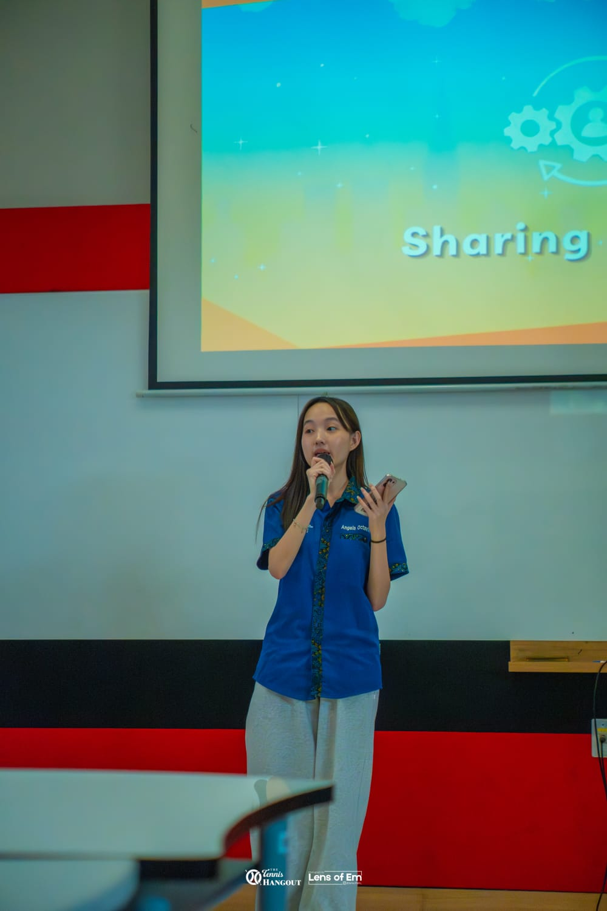
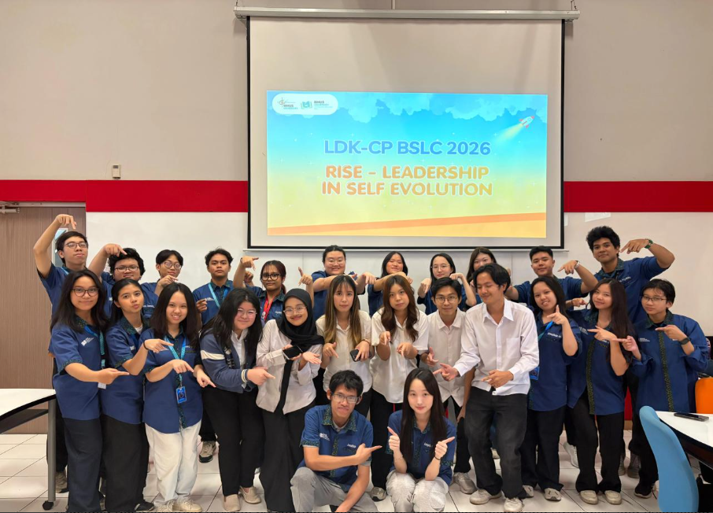
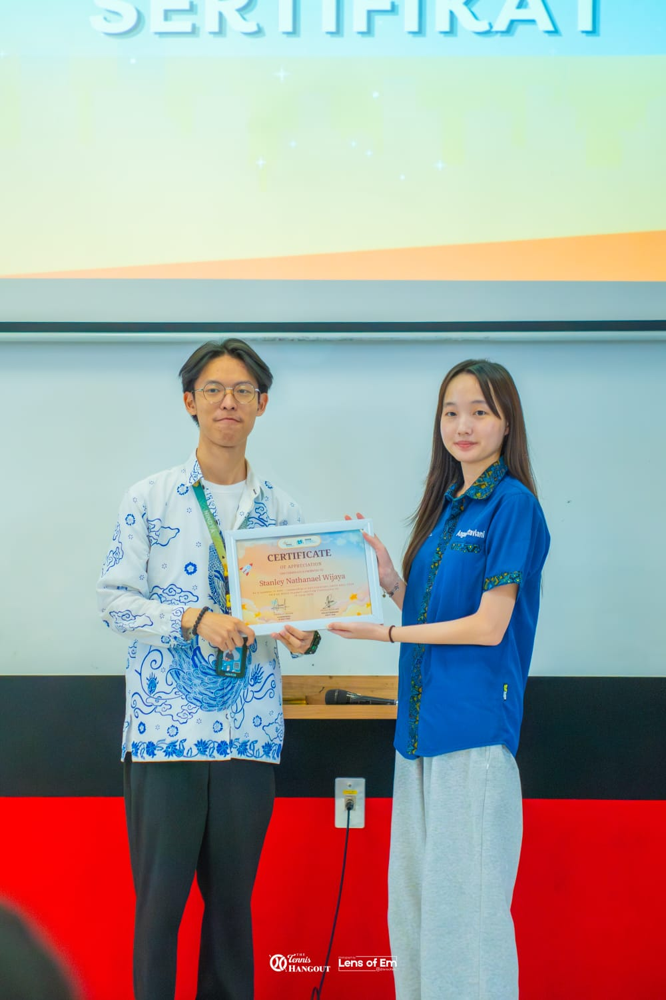

MAR 2026 — PRESENT
Project Manager — LDKCP BSLC
Binus Student Learning Community
Led end-to-end planning and execution of the LDKCP BSLC program, coordinating cross-functional teams, timelines, and workflows to strengthen collaboration and ensure smooth program delivery.


